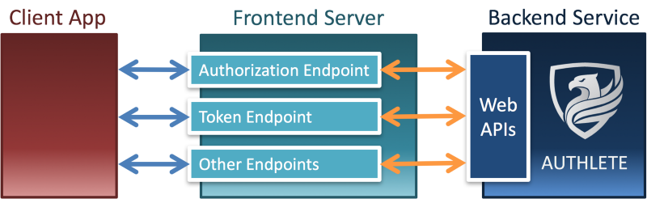

New Architecture of OAuth 2.0 and OpenID Connect Implementation
Takahiko Kawasaki Oct 23, 2017
~Semi-Hosted Service Pattern~
1. Semi-Hosted Service Pattern
This article describes details about a new architecture of OAuth 2.0 and OpenID Connect implementation which is categorized as "Semi-Hosted Service" pattern in “_Deployment and Hosting Patterns in OAuth__”_.
In the pattern, a frontend server (an authorization server and an OpenID provider) utilizes a backend service which provides APIs to help the frontend server implement OAuth 2.0 and OpenID Connect. Authlete is a real-world example of such backend services. The figure below illustrates the relationship between a frontend server and a backend service (Authlete).

The primary advantage of this architecture is in that the backend service can focus on implementing OAuth 2.0 and OpenID Connect without caring about other components such as identity management, user authentication, login session management, API management and fraud detection. And, consequently, it leads to another major advantage which enables the backend service (implementation of OAuth 2.0 and OpenID Connect) to be combined with any solution of other components and thus gives flexibility to frontend server implementations.
2. User Authentication
Although RFC 6749 (The OAuth 2.0 Authorization Framework) explicitly states as follows:
The way in which the authorization server authenticates the resource owner (e.g., username and password login, session cookies) is beyond the scope of this specification.
, most implementations provide both user authentication and authorization combinedly as a package solution because user authentication is included as a step in authorization process as illustrated below (see “3. Authentication and Authorization” in “_Full-Scratch Implementor of OAuth and OpenID Connect Talks About Findings__”_ for details). To put the other way around, rather, it's because it is difficult to separate user authentication from OAuth 2.0 and OpenID Connect implementation.
Such package solutions often offer mechanisms to customize user authentication process (e.g. editable authorization page, common interface over underlying identity management system, hooks in page transitions). However, this approach makes it difficult to adopt a new user authentication mechanism whose flow is considerably different from the ones assumed by the package solutions.
On the other hand, Authlete has adopted the semi-hosted service pattern in order to eliminate the need itself to abstract the way of user authentication. Authlete requires only a result of user authentication and does not care about how the result has been obtained. Consequently, Authlete can be combined with any user authentication solution.
You may wonder what is a result of user authentication. Regardless of how a user is authenticated (e.g. by ID and password, fingerprint, iris, hardware token, random table, and whatever), from a technical point of view, user authentication is a process to identify a unique user identifier. That is, a result of user authentication is a user ID.
2.1. How to Push Out User Authentication?
The figure below is a diagram of the Authorization Code Flow defined in “_4.1. Authorization Code Grant__”_ in RFC 6749. (You can find the same figure in “_Diagrams And Movies Of All The OAuth 2.0 Flows__”_.)
The client application makes an authorization request in the step (2), and the authorization server returns an authorization code in the step (6). User authentication is performed in between (2) and (6). User authentication, however, may be omitted if the user has already been authenticated. In either case, the authorization server has to obtain the user ID before issuing an authorization code because the user ID has to be associated with the authorization code.
To push out user authentication completely from the implementation of OAuth 2.0 and OpenID Connect, Authlete has divided the authorization flow into the following three parts:
(a) Processing the authorization request
(b) Authenticating the user
(c) Making the authorization response
and provides two separate APIs for (a) and (c) only. Authlete does nothing for (b) and leaves it to customers.
The point is in that the API for (c) requires a result of (b). In other words, API callers must pass a unique user identifier to the API.
The figure below illustrates how a frontend server and a backend service (Authlete) work together. You can see that user authentication is performed at the frontend server in the step (11) and that the user ID is passed to an Authlete's API (/api/auth/authorization/issue) in the step (12).
Authorization Code Flow + AUTHLETE
2.2. Other OAuth flows + Authlete
Just for references.
Implicit Flow + AUTHLETE
Resource Owner Password Credentials Flow + AUTHLETE
Client Credentials Flow + AUTHLETE
Refresh Token Flow + AUTHLETE
3. API Management
The growth of the API economy has attracted many companies into the market of API management. Most solutions in the market provide some mechanisms to protect APIs, including protection by OAuth 2.0 access tokens.
Instead of incorporating functionality of OAuth 2.0 and OpenID Connect in a complicated manner, some API management solutions have decided to delegate the functionality to external third-party solutions.
3.1. AWS API Gateway
One example is AWS API Gateway. It provides a mechanism to delegate validation of bearer tokens (such as OAuth 2.0 tokens) presented by client applications to an external authorizer. The figure below excerpted from “_Enable Amazon API Gateway Custom Authorization__”_ illustrates the mechanism.
Custom Authorizer; mechanism to delegate validation of bearer tokens
“Lambda Auth function” at the top position in the figure is an authorizer. The implementation of the function receives bearer tokens from API Gateway, validates them, and returns the result of the validation to API Gateway. Based on the result, API Gateway determines whether to accept the request from the client or reject it.
The implementation of the function itself may in turn delegate the validation to an external authorizer. The figure below is an example which uses Authlete as the external authorizer. Technical details about this are written in “_Amazon API Gateway + AWS Lambda + OAuth__”_.

Custom Authorizer using Authlete
3.2. IBM API Connect
IBM API Connect is another example. It has OAuth implementation, but at the same time, it can delegate validation of access tokens to an external authorization server if the server supports RFC 7662 (OAuth 2.0 Token Introspection). Details are written in “_Integrating third party OAuth provider__”_ (in IBM Knowledge Center).
Note for developers:
APIs built using IBM API Connect require a custom HTTP header, X-IBM-Client-Id, in addition to Authorization header which includes an access token in the way defined in “_2.1. Authorization Request Header Field__”_ in RFC 6750. The custom header is required even if access token validation is delegated to a third-party authorization server.
The following is the command line excerpted from “_Using the access token__”_ (in “_Tutorial: Securing an API by using OAuth 2.0__”_ in IBM Knowledge Center) (with extra line breaks added for display purpose only).
curl -k -v
A certain major bank in Japan has adopted IBM's solution for its bank API, and now X-IBM-Client-Id is a part of the bank's official API specification (example).
4. Login Session Management
Before an OpenID provider issues an ID token, it has to authenticate the user. However, user authentication may be skipped if the user has already logged in the server.
In the semi-hosted service pattern, login session management is handled by the frontend server (OpenID provider), and the backend service does nothing for it. Because login session management is separated from OAuth and OpenID Connect implementation, developers can choose any solution for login session management (e.g. Apache Shiro) as they like.
java-oauth-server is a good example that demonstrates login session management can be handled only in the frontend server. The open-source software is an implementation of authorization server and OpenID provider written in Java. It uses Authlete as the backend service.
When we ran the OpenID Certification test for java-oauth-server for the first time, the test reported some errors related to login session management. We could solve the errors by adding login session management to java-oauth-server. The point is that we didn't have to change any code of the backend service (Authlete) to solve the errors. This has proved login session management can be implemented in the frontend server independently of the backend service.
5. Identity Management
Authorization in the context of identity management and authorization in the context of OAuth are different. In the former context, authorization means _“who has what permissions”_. In the latter context, authorization means _“who grants what permissions to whom”_. They are different but in some cases you have to handle both simultaneously. This question (_“How to verify which resources each user can access with OAuth and OpenID Connect?”_) and this answer in Stack Overflow show one of such use cases.
Some identity management solutions support authorization in the context of OAuth (which may make people confused). However, the semi-hosted service pattern removes the need itself for identity management solutions to support OAuth.
5.1. Shared User Database
Suppose there is a system for music service. If we develop APIs of the system with an authorization server which is tightly combined with identity management, the system will look like the figure below. The authorization server holds both a user database and an authorization database.
An authorization server combined tightly with identity management
If the company running the music service expands its business and starts a healthcare service and a travel service, and if APIs of the new services are built on top of the existing system, the authorization server is shared as illustrated below even though API servers are prepared independently.
Multiple services share one authorization server
Sharing an authorization server among services means that scopes (permissions) and client applications of the services are managed at one place. For example, a permission to create play lists (music service), a permission to refer to the record of body weight (healthcare service) and a permission to reserve hotels (travel service) are managed at one place.
Because each service usually has a different development team, a different schedule, a different target for API exposure and different client applications, it is desirable to make each service have its own authorization server. At the same time, it is also desirable to share the user pool among services. However, if an authorization server is tightly combined with identity management, it is difficult to have multiple authorization servers for multiple services which share the same user pool.
On the contrary, what if there exists an authorization server which is not tied to identity management? If you have such an authorization server, you can build a system where each service has its own authorization server but shares the same user pool with other services. The semi-hosted service pattern which clearly separates authorization from identity management enables you to adopt such a system architecture.
Each service has an authorization server but shares one user pool with other services
5.2. Multiple Authorization Servers
Even if the architecture where each service can have its authorization server is beautiful, if it requires many man-hours to develop one authorization server, it is difficult to adopt the architecture. But, it is almost okay to expect that implementations (such as Authlete) which by design take multiple authorization servers into consideration offer a mechanism to easily create and delete authorization server instances.
As an example, the figure below illustrates the steps to create a new instance of authorization server / OpenID provider in Authlete's web console (Service Owner Console). Just three clicks. If it is easy to create an authorization server instance like this, system architects can pursue a better architecture for their OAuth and OpenID Connect implementations.
6. Extensibility
Frontend servers are expected to behave as defined in the standard specifications. On the other hand, backend services in the semi-hosted service pattern can design their APIs freely without any restraint.
The following sections show example extensions that backend services may provide in order to help developers implement authorization servers and OpenID providers.
6.1. Access Token Creation
In some use cases, you may want to create access tokens using a different way than the standard flows defined in the specification (RFC 6749). Backend service may provide an API for that purpose.
Example
Authlete's /api/auth/token/create API is an example. By using the API, developers can create access tokens without user interaction.
$ curl ¥ --user 4593494640:BBw0rner_-y1A6J9s20wjRCpkBvez3GxEBoL9jOJVR0 \ https://api.authlete.com/api/auth/token/create \ -d grantType**=**AUTHORIZATION_CODE \ -d clientId**=**98282920604 \ -d subject**=**user123 \ -d scopes**=**photo#### 6.2\. Extra Data of Access Token The following is an excerpt from _“_[_5.1\. Successful Response_](https://tools.ietf.org/html/rfc6749#section-5.1)_”_ in RFC 6749.
{
"access_token":"2YotnFZFEjr1zCsicMWpAA",
"token_type":"example",
"expires_in":3600,
"refresh_token":"tGzv3JOkF0XG5Qx2TlKWIA",
"example_parameter":"example_value"
}
This shows a possibility that non-standard parameters such as example_parameter may be returned when an access token is issued. However, there is no standardized way to associate arbitrary data like example_parameter with an access token.
Backend services in the semi-hosted service pattern can provide a mechanism to associate arbitrary data with an access token without needing to add proprietary specifications to frontend servers.
Example
properties request parameter of some Authlete APIs is an example. By passing an array of key-value pairs via the request parameter, developers can associate arbitrary data with access tokens.
The following is an example of /api/auth/authorization/issue API call with the properties request parameter.
$ curl \
--user 4593494640:BBw0rner_-y1A6J9s20wjRCpkBvez3GxEBoL9jOJVR0 \
https://api.authlete.com/api/auth/authorization/issue \
-H 'Content-Type:application/json' \
-d "{\"ticket\":\"xKdGvPyPkLJRkmP6MSAJ1wISBmdnSbPG8pFzgTdZh4U\",
\"subject\":\"user123\",
\"properties\":[
{\"key\":\"example_parameter\",
\"value\":\"example_value\"},
{\"key\":\"hidden_parameter\",
\"value\":\"hidden_value\",
\"hidden\":true}]}"
6.3. Operations on a User-Client Basis
In order to enable a user to revoke permissions given to client applications, the service has to display client applications to which the user has given permissions, let the user select client applications, and delete all the access tokens issued to the selected client applications by the user.
Some authorization server implementations may provide UI for the purpose. On the other hand, backend services in the semi-hosted service pattern would take a different approach - provide APIs instead of UI.
Example
Developers can support the use case above by using the following Authlete APIs.
- /api/client/authorization/get/list
- /api/client/authorization/delete
- /api/client/authorization/update
6.4. Record of Granted Permissions
When a client application wants new permissions in addition to the ones it already has, it sends an authorization request to the authorization server again. As a response to the request, the authorization server will return an authorization page which includes the list of permissions requested by the client application.
A simple implementation will list all the permissions in the authorization page. On the other hand, a user-friendly implementation may list the new permissions only.
To implement the user-friendly authorization page, the authorization server has to remember sets of permissions granted to client applications by users. It should be noted that the records of granted permissions cannot be deleted even after all the associated access tokens expire. Otherwise, permissions would be displayed to users again if an authorization request is made after all access tokens expire.
Some authorization server implementations may provide UI for the purpose. On the other hand, backend services in the semi-hosted service pattern would take a different approach — provide APIs instead of UI.
Example
Developers can support the use case above by using the following Authlete APIs. Note that these APIs work on dedicated servers only (don't work on the shared server, api.authlete.com).
Summary
This article explained a new architecture that, instead of providing an authorization server and OpenID provider itself, provides technical components as Web APIs with which developers can develop authorization servers and OpenID providers. This architecture has been named “Semi-Hosted Service Pattern”.
This architecture draws a clear line between an implementation of OAuth 2.0 / OpenID Connect and other technical components such as user authentication and identity management. I hope developers who seek for better system architectures will notice the advantages of the semi-hosted service pattern.
Thank you for reading this long article to the end.
Copyright © 2015 Powered by MWeb, Theme used GitHub CSS.